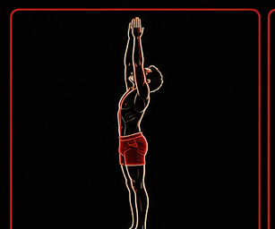
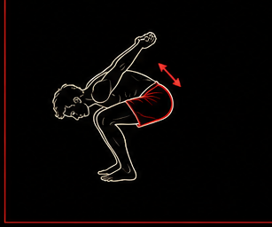
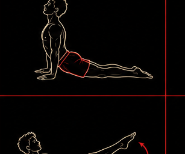
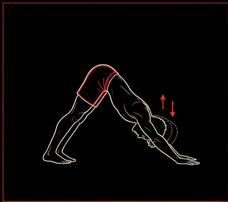

Breath leads
Start the movement after the inhale or exhale begins. Do not rush to finish the shape.
Learning resource
A clean, beginner-friendly map for linking breath and movement. Use it as a warm-up, a stand-alone daily rhythm, or the opening pattern before deeper mobility work.
What it is
Sun Salutation A is a simple vinyasa sequence built around standing, folding, stepping or jumping back, plank strength, back-body opening, and downward-facing recovery. Keep the first rounds smooth and easy. The goal is not depth; the goal is repeatable breath and clean transitions.
Practice rules
Start the movement after the inhale or exhale begins. Do not rush to finish the shape.
Step back instead of jumping, lower knees for plank strength, and soften knees in folds.
Three calm rounds are more useful than one forced round with messy shoulders or breath.
Sequence map
This is original Smile Asana cueing for a classic public-domain yoga sequence. Sanskrit pose names are included for reference, but the movement language stays practical.

Breath: settle for one full inhale and exhale.
Root through the feet, soften the jaw, and stack ribs over pelvis.
Breath: inhale.
Reach arms overhead without dumping into the low back. Keep the legs awake.

Breath: exhale.
Hinge and fold. Bend the knees enough that the spine can release without strain.

Breath: inhale.
Lengthen through the crown. Place hands on shins, thighs, blocks, or the floor.

Breath: exhale.
Keep shoulders organized. Lower knees if the body line or wrist comfort disappears.

Breath: inhale.
Pull the chest forward, broaden the collarbones, and keep the backbend even.

Breath: exhale, then stay for 3-5 breaths.
Press the floor away, lengthen the spine, and let the knees bend if hamstrings pull hard.
Breath: inhale.
Come to the front of the mat and lengthen before folding again.
Breath: exhale.
Release the head and keep the feet active.
Breath: inhale to rise, exhale to settle.
Return to standing and notice whether the breath feels clearer than when you started.
How to use it